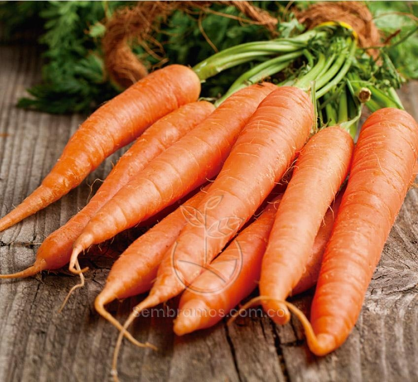
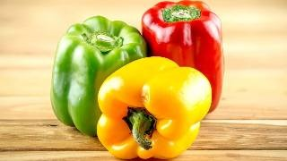

Zanahorias Orgánicas
$900 CLP por kilo
Stock: 100 kilos
Zanahorias crujientes cultivadas sin pesticidas en la Región de O'Higgins. Excelente fuente de vitamina A y fibra, ideales para ensaladas, jugos o como snack saludable.
Del campo al hogar
Descubre nuestra gama de verduras orgánicas, cultivadas sin el uso de pesticidas ni químicos, garantizando un sabor auténtico y natural. Cada verdura es seleccionada por su calidad y valor nutricional, ofreciendo una excelente fuente de vitaminas, minerales y fibra. Ideales para ensaladas, guisos y platos saludables, nuestras verduras orgánicas promueven una alimentación consciente y sostenible.

$900 CLP por kilo
Stock: 100 kilos
Zanahorias crujientes cultivadas sin pesticidas en la Región de O'Higgins. Excelente fuente de vitamina A y fibra, ideales para ensaladas, jugos o como snack saludable.

$700 CLP por bolsa de 500g
Stock: 80 bolsas
Espinacas frescas y nutritivas, perfectas para ensaladas y batidos verdes. Estas espinacas son cultivadas bajo prácticas orgánicas que garantizan su calidad y valor nutricional.

$1,500 CLP por kilo
Stock: 120 kilos
Pimientos rojos, amarillos y verdes, ideales para salteados y platos coloridos. Ricos en antioxidantes y vitaminas, estos pimientos añaden un toque vibrante y saludable a cualquier receta.